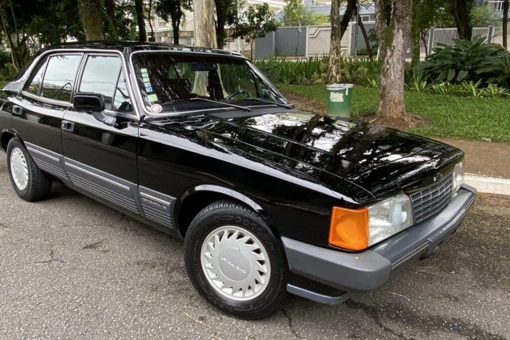
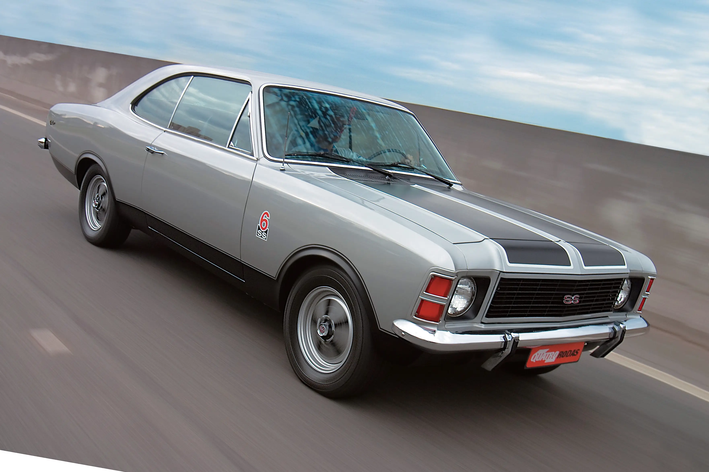

Lançado em 1968, o Opala uniu estilo americano e mecânica europeia para se tornar um dos carros mais icônicos da história automotiva brasileira.
Galeria


Destaques
- Lançamento (1968): disponível com motor 2.5 ou 3.8 litros e design inspirado em linhas americanas.
- Versões icônicas: SS, Comodoro e Diplomata tornaram o Opala sinônimo de status.
- Caravan: a perua de 1975 ampliou a família Opala com ainda mais espaço.
- Ficha técnica: o Opala 2.5 de 1970 tinha 80 cv e 18 kgfm de torque, com câmbio manual de quatro marchas.
Vídeo em destaque
Curiosidades
- O nome "Opala" junta Opel e Impala, refletindo origem europeia e americana.
- Foi safety car da Fórmula 1 em 1973 e 1975.
- O Comodoro era a versão de luxo mais desejada da linha.
- Hoje é um dos clássicos mais celebrados pelos colecionadores brasileiros.